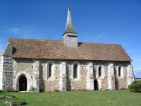

 Saint Michel de Vitotel

"L'Eglise Saint Michel de Vitotel est un spécimen à peu près intact d'église rurale du premier quart du XIIIe siècle. C'est un vaisseau unique de plan rectangulaire dont les murs en silex d'épaisseur partout égale (0.80 m) sont percés de deux portes ouvertes au sud, sans tympan et en tiers-point (la plus occidentale possède deux rangées de claveaux ornées chacune d'un fore dégagé et était autrefois précédée d'un porche en appentis démoli en 1916) et de lancettes en tiers-point fortement ébrasées et épaulées par des contre-forts à double glacis plus saillants et plus épais contre le choeur qui seul primitivement était destiné à être vouté. Dans le mur pignon de l'ouest s'ouvre une fenêtre plus importante et au chevet un triplet dont la baie centrale est deux fois plus large que les autres. Le choeur possède une voûte sur croisée d'ogives construite en blocage, remarquable par l'importance des doubleaux à deux rangées de claveaux aux angles abattus par un clavet bordé de deux filets ou un biseau et des supports composés de deux pilastres adossés aux angles également abattus par un large biseau et se terminant par tailloirs et des socles carrés. Les tailloirs présentent le profil en cavet bordé de deux filets. les voûtes sont portées par des nervures assez minces dont le profil se composent de deux larges biseaux reliés par un méplat, ces nervures reposent sur des culots. les voûtes de la nef sont légèrement postérieures à celles du choeur et à la construction de la nef elle-même. Les doubelaux et les nervures reposent sur des colonnettes assez minces à tailloirs polygonaux et aux bases circulaires et socle polygonal, engagées dans les murs. Le profil des doubleaux et nervures est identique à celui des nervures du choeur. La forme surbaissé des doubleaux s'explique par un affaissement résultant de l'écartement accidentel du mur septentrional. La voûte de la nef est appareillée en petites pierres régulièrement taillées. On remarquera l'absence de formerets dans la nef comme dans le choeur. Deux piscines de forme soignée et contemporaines de la construction s'ouvrent dans le mur méridional du choeur ainsi qu'une armariole à usage de tabernacle dans le mur du chevet. A l'angle sud-ouest de la nef s'ouvre la porte qui donne accès à un escalier à vis très étroit. la corniche intérieur est composée d'un cavet bordé de deux biseaux.
Un clocher carré à flèche octogonale surmonte la facade occidentale de la nef. Cloche de 1852 (Caplain d'Elbeuf)."
(Extrait de l'article de M. Marcel Baudot, Inspecteur général des Archives de France, paru dans le n° 11 de Nouvelles de l'Eure, La Vie et l'Art en Normandie, 1er trimestre 1962).